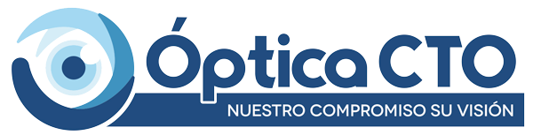
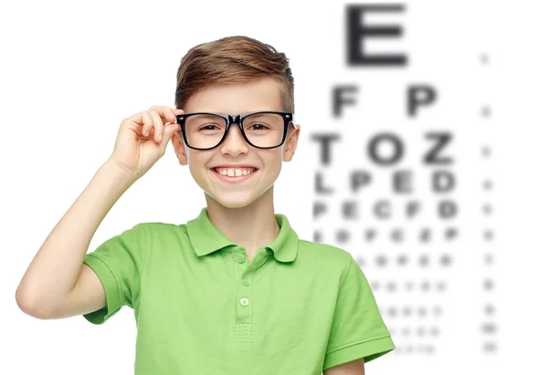
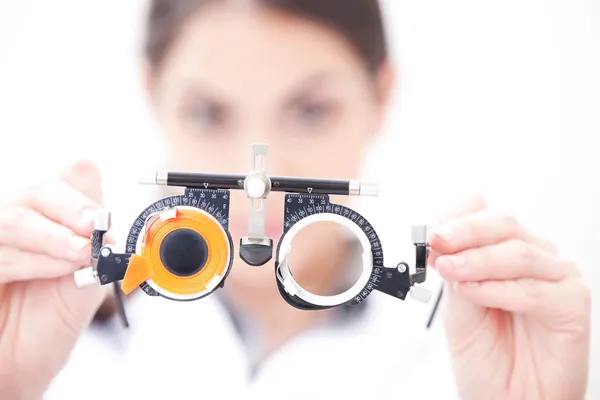

MISIÓN

En Óptica CTO nos sentimos comprometidos en dar plena satisfaccion a nuestros clientes ofreciéndoles una selección de los mejores y mas variados productos atravez de un servicio diferenciado, exclusivos y de alta calidad, apoyándonos en un exquisito trato personalizado, para lograr que cada cliente se sienta especial y plenamente satisfecho.
VISIÓN

Consolidarnos como la mejor opcion óptica para satisfacer sus necesidades, y seguiremos siendo los líderes como la cadena de ópticas de mayor cobertura nacional bajo el amparo de la tecnología, productividad, talento humano y un profundo espíritu de servicio.
SERVICIOS
Óptica CTO tiene para usted el servicio integral que su salud visual necesita, con el mejor apoyo humano y profesional a su disposición.
Consulte por nuestra gran variedad de servicios para todas sus necesidades.
Examen de la vista por computadora.
Examen de la vista para adultos.
Examen de la vista para niños mayores de 6 años.
Diagnósticos de alteraciones oculares.
Adaptación de lentes de contacto blandos para la corrección de miopía, astigmatismo e hipermetropía.
Soluciones para lentes de contacto y gotas humectantes.
Reparaciones varias.
HISTORIA
Óptica CTO fue fundada en 1959 por el Dr. Juan Riquelme. Desde sus inicios ópticas matamoros siempre ha estado a la vanguardia en investigación y desarrollo de nuevas tecnologías que proporcionen una mejor visión y calidad de vida a sus clientes. Su sede es Ave Cervantes #218, Tegucigalpa, Honduras
En Honduras fue la primera en introducir: en los años 80 las lentes orgánicas CR-39. A inicios de los 90 se fabricaron las primeras lentes de polycarbonato. A comienzos del siglo XXI innovamos con el proceso de lentes antireflejantes (AD, Alta Definición); y en el 2010 fuimos los primeros en Centro América en incorporar en nuestra moderna planta de producción de lentes oftálmicas de tecnología digital.